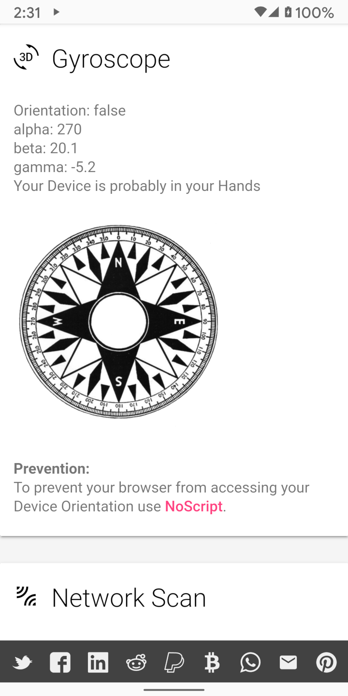

(ambos indicam que o JavaScript está desativado) e vermelho (JavaScript ativado).
É informativo observar as diferentes informações que o webkay pode coletar com o JavaScript ativado e desativado.
(ambos indicam que o JavaScript está desativado) e vermelho (JavaScript ativado).
É informativo observar as diferentes informações que o webkay pode coletar com o JavaScript ativado e desativado.Nos primórdios da internet, as páginas da web eram estáticas, o que significa que continham texto e imagens que eram exibidos na tela, mas não mudavam ou interagiam com o usuário. Obviamente, somente o que é interessante pode acontecer com o conteúdo estático. Várias tecnologias diferentes foram desenvolvidas para facilitar páginas da web dinâmicas. JavaScript é uma dessas tecnologias.
JavaScript é uma linguagem de programação. Muitos servidores da web hospedam programas escritos em JavaScript, que são enviados aos dispositivos como parte da página da web. O dispositivo executa o JavaScript em seu processador local e segue os comandos do programa, que pode animar imagens no site, abrir um menu e fazer muitas outras coisas úteis.
Obviamente, o conceito de executar programas arbitrários a partir de um site é potencialmente perigoso. Portanto, existem limitações colocadas no JavaScript para impedi-lo de fazer coisas como instalar vírus. No entanto, verifica-se que essas limitações são excessivamente amplas. Abaixo está uma captura de tela do webkay, no qual é um site que demonstra o tipo de informação que o JavaScript pode produzir sobre um dispositivo. Browser Leaks é um outro bom recurso.

Para fins de privacidade, o ideal seria navegar na internet com o JavaScript desabilitado.
No entanto, existem alguns sites que exigem legitimamente o JavaScript para cumprir seus objetivos
e outros que não funcionam corretamente sem JavaScript, embora possam ser programados para isso.
O Privacy Browser resolve isso facilitando a ativação e desativação do JavaScript.
Tocar no escudo de privacidade irá alterná-lo entre azul ou amarelo
(ambos indicam que o JavaScript está desativado) e vermelho (JavaScript ativado).
É informativo observar as diferentes informações que o webkay pode coletar com o JavaScript ativado e desativado.
Navegar na Internet com o JavaScript desabilitado e habilitá-lo apenas se necessário ajuda muito a proteger a privacidade. Além disso, o JavaScript é usado para carregar muitos dos anúncios irritantes e lixo extra que vem junto com a maioria dos sites modernos. Com ele desabilitado, os sites carregam mais rápido, consomem menos tráfego de rede e usam menos energia da CPU, o que aumenta a vida útil da bateria.